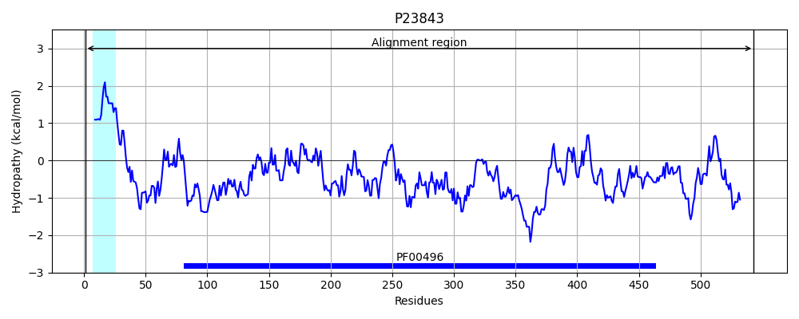
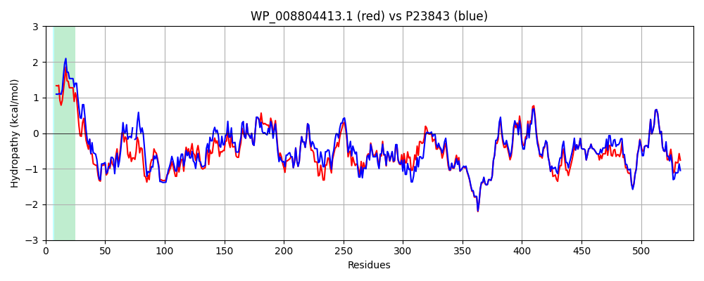

Hit Accession: P23843
Hit TCID: 3.A.1.5.41
Hit Description: gnl|BL_ORD_ID|9456 gnl|TC-DB|P23843|3.A.1.5.41 Periplasmic oligopeptide-binding protein OS=Escherichia coli (strain K12) GN=oppA PE=1 SV=2
Mach Len: 544
e:0.000000
Query TMS Count : 1
Hit TMS Count: 1
TMS-Overlap Score: 0.950000
Predicted Substrates:CHEBI:7755;oligopeptide
BLAST Alignment:
Score: 2473 , Bit scores: 957 bits, E-value: 0.0e+00, Alignment length: 544, Percentage identity: 84
Query: 1 MTIITKKRLIAAGVLSALLAGNMAMAADVPAGVQLSDKQTLVRNSGAEPQSLDPNKIEGVPEANISRDLFEGLLNTSPKDGHPIPGVAESWDNKDFKVWTFHLRKDAKWSNGEPVTAQDFVYSWQRLVDPKTASPYASYPQYGHIVNVDDIIDGKKAPSELGVKAIDDHTLEVTLSEPVPYFYKLLVNPAMSPVYKPAIEKFGEKWTQPGNIVTNGAYTLKDWVVNERIVMERNPHYWDNAKTVINTVTWLPTSSEVTYVNRYRSGELDMTYNQLPIELFQKLKKEIPNELHVDPYLCTYYYEINNQKAPFTDVRVRTALKLGLDRDIIANKVKGQGDLPAYGYTPPYTDGAKLSEPEWFTWSQEKRNEEAKKLLAEAGYTADKPLTFNLLYNTSDLHKKLAIAAASLWRKNLGIDVKLVNQEWKTFLDTRHQGTYDVARAGWCADYNEPTSFLNTMLSDSSMNTAHYKSPAFDKIMAESVKASDEAQRTAAYAKAEQQLDKDSAIVPVYYYVNARLVKPWVGGYTGKDPMDNVYTKDLYVIKH 544
MT ITK+ L+AAGVL+AL+AGN+A+AADVPAGV L++KQTLVRN+G+E QSLDP+KIEGVPE+NISRDLFEGLL S DGHP PGVAESWDNKD KVWTFHLRKDAKWS+G PVTAQDFVYSWQR VDP TASPYASY QYGHI +D+I++GKK ++LGVKAIDDHTLEVTLSEPVPYFYKLLV+P+ SPV K AIEKFGEKWTQPGNIVTNGAYTLKDWVVNERIV+ER+P YW+NAKTVIN VT+LP +SEVT VNRYRSGE+DMT N +PIELFQKLKKEIP+E+HVDPYLCTYYYEINNQK PF DVRVRTALKLG+DRDII NKVK QG++PAYGYTPPYTDGAKL++PEWF WSQEKRNEEAKKLLAEAGYTADKPLT NLLYNTSDLHKKLAIAA+SLW+KN+G++VKLVNQEWKTFLDTRHQGT+DVARAGWCADYNEPTSFLNTMLS+SSMNTAHYKSPAFD IMAE++K +DEAQRTA Y KAEQQLDKDSAIVPVYYYVNARLVKPWVGGYTGKDP+DN YT+++Y++KH
Sbjct: 1 MTNITKRSLVAAGVLAALMAGNVALAADVPAGVTLAEKQTLVRNNGSEVQSLDPHKIEGVPESNISRDLFEGLL-VSDLDGHPAPGVAESWDNKDAKVWTFHLRKDAKWSDGTPVTAQDFVYSWQRSVDPNTASPYASYLQYGHIAGIDEILEGKKPITDLGVKAIDDHTLEVTLSEPVPYFYKLLVHPSTSPVPKAAIEKFGEKWTQPGNIVTNGAYTLKDWVVNERIVLERSPTYWNNAKTVINQVTYLPIASEVTDVNRYRSGEIDMTNNSMPIELFQKLKKEIPDEVHVDPYLCTYYYEINNQKPPFNDVRVRTALKLGMDRDIIVNKVKAQGNMPAYGYTPPYTDGAKLTQPEWFGWSQEKRNEEAKKLLAEAGYTADKPLTINLLYNTSDLHKKLAIAASSLWKKNIGVNVKLVNQEWKTFLDTRHQGTFDVARAGWCADYNEPTSFLNTMLSNSSMNTAHYKSPAFDSIMAETLKVTDEAQRTALYTKAEQQLDKDSAIVPVYYYVNARLVKPWVGGYTGKDPLDNTYTRNMYIVKH 543 | Protein Hydropathy Plots: |
|---|
 |  |
Pairwise Alignment-Hydropathy Plot:
|
|---|
|  |